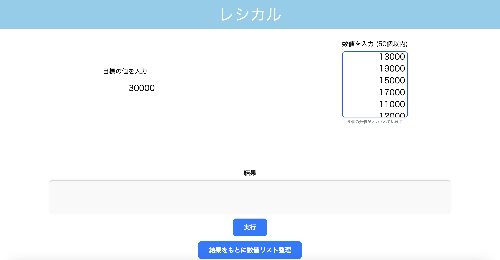
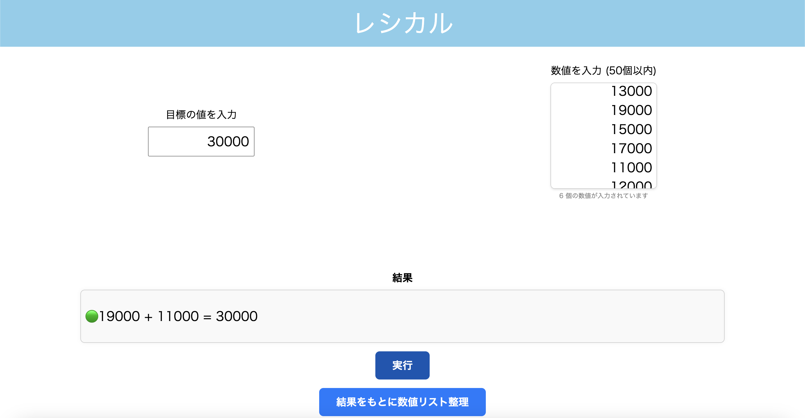
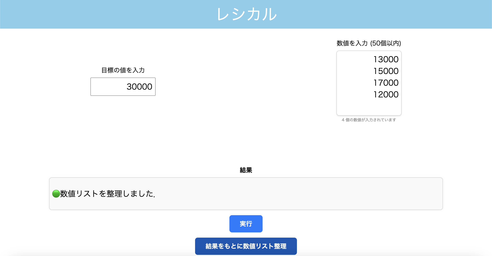
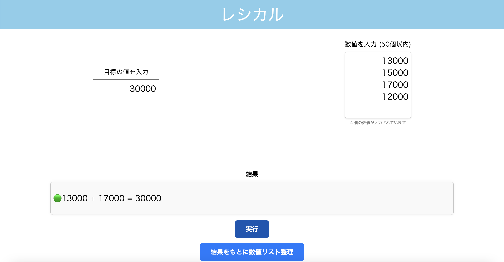
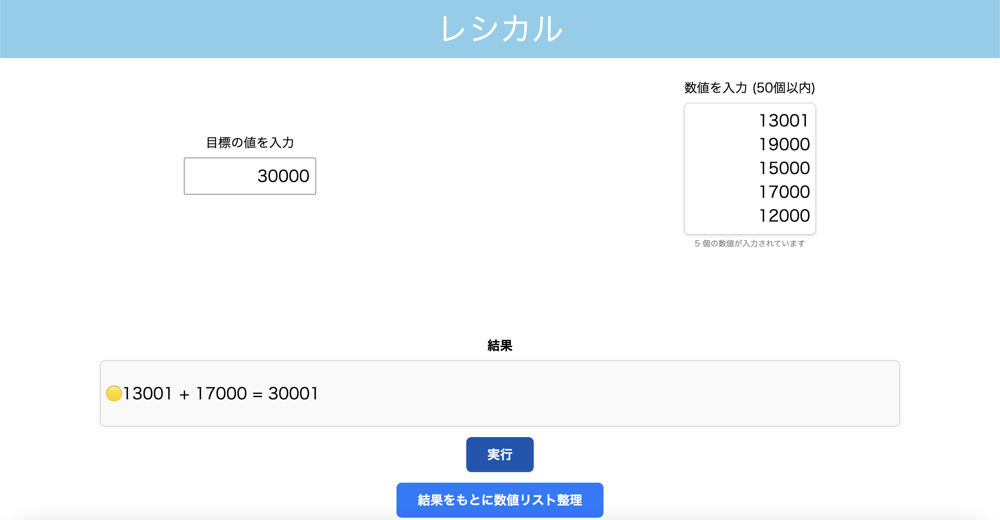

大量のレシートの中から，合計が指定額になる組み合わせを高速に見つけるアプリです．
もしぴったりの組み合わせが存在しない場合は，指定額を超える最小の合計額を返します．
| 目標値と数値の入力 | 最適な組み合わせの表示 |
 |
 |
| 「目標の値を入力」に指定額を入力し，「数値を入力 (50個以内)」に各レシートの額を改行区切りで入力します． | 「実行」ボタンを押すと，最適な組み合わせを表示します． |
| 数値リスト整理 | 整理後の実行結果 |
 |
 |
| 「結果をもとに数値リスト整理」ボタンを押すと，直前の実行で使われたレシート額をリストから自動で削除します． | 整理後に再び「実行」ボタンを押すと，別の組み合わせを探索できます． |
| 近似解の表示 | |
 |
|
| ぴったりの組み合わせが見つからない場合は，指定額を超える最小合計額の組み合わせを表示します． |